<section class="bg-gradient-to-b from-[#0072c6] to-[#004e8c] text-white py-16 lg:py-20">
  <div class="max-w-6xl mx-auto px-4 sm:px-6 lg:px-8">
    <div class="flex flex-col md:flex-row justify-center items-center gap-12 lg:gap-20">
      
      <!-- Left: Text Content -->
      <div class="md:w-1/2 text-center md:text-left">
        <h3 class="text-3xl lg:text-4xl font-bold mb-4">
          Drive Open Innovation
        </h3>
        <p class="text-base lg:text-lg leading-relaxed mb-6 opacity-90">
          Develop your skills, collaborate with other innovators on worthwhile open-source projects, and use technology to advance society by joining the LSF Fellows community, a global network of innovators.
        </p>
        <a href="#" class="inline-block bg-white text-blue-700 font-semibold py-2 px-6 rounded-lg shadow-md transition-transform transform hover:scale-105 hover:bg-gray-100">
          Apply
        </a>
      </div>
      
      <!-- Right: Logo -->
      <div class="md:w-1/2 flex justify-center md:justify-end">
        
      </div>

    </div>
  </div>
</section>
